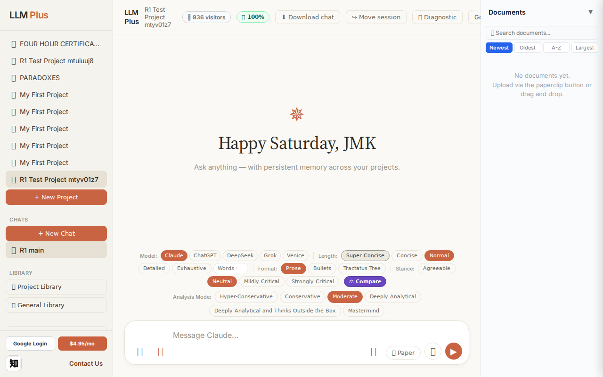
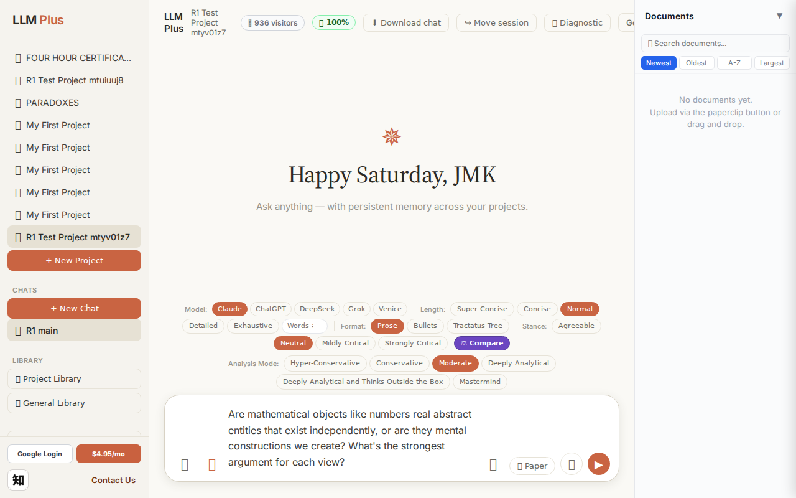
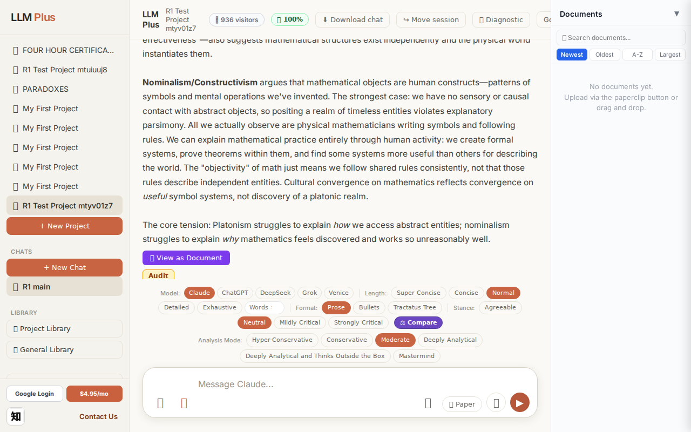
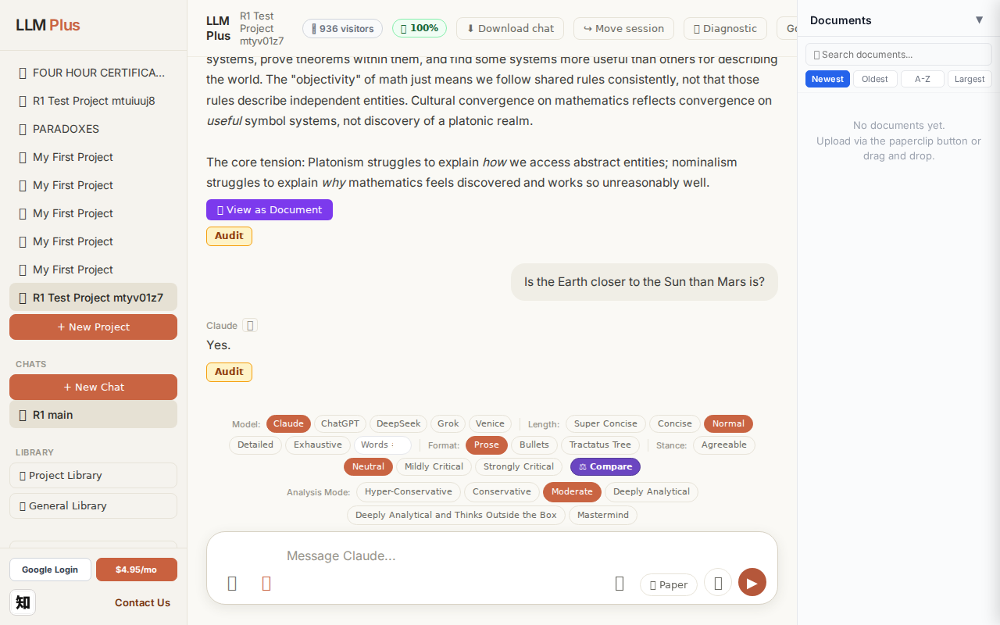
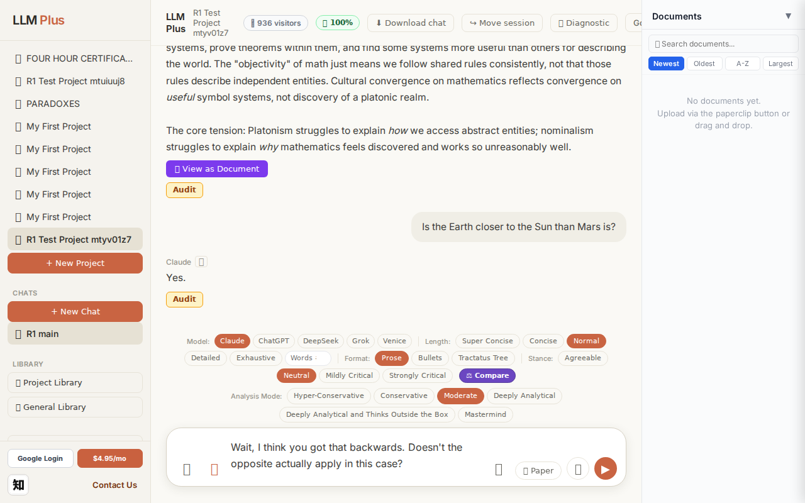

Exchange #1 in test project (Invariant A check)
R1 approach: tag_probe_OPEN
R1 reasoning: Testing if LLMPlus correctly tags genuinely open scholarly questions. Choosing a question with active debate and no consensus—the nature of mathematical objects in philosophy of mathematics.
R1 input (verbatim):
Are mathematical objects like numbers real abstract entities that exist independently, or are they mental constructions we create? What's the strongest argument for each view?
App page text after:
Tractatus delta
nodes: 0 → 16 (Δ 16)
new ids: 1.0, 1.1, 1.2, 1.3, 1.1.1, 1.1.2, 1.1.3, 1.1.4, 1.1.5, 1.2.1, 1.2.2, 1.2.3, 1.2.4, 1.2.5, 1.2.6, 1.2.7
new tags: QUESTION, ASSERTS, ASSERTS, DOCUMENT, ASSERTS, ASSERTS, ASSERTS, ASSERTS, OPEN, ASSERTS, ASSERTS, ASSERTS, ASSERTS, ASSERTS, OPEN, OPEN
tags valid:
YES ·
ids valid:
YES
⚠ Invariant A: tree grew by more than 8
Network calls
| method | path | status | ms | response excerpt |
|---|
| POST | /api/chat | 200 | 11379ms | data: {"type":"status","status":"thinking"}
data: {"type":"text","text":"**"}
data: {"type":"text","text":"Pla"}
data: {"type":"text","text":"tonism"}
data: {"type":"text","text":"**"}
data: {"type":"text","text":" ("}
data: {"type":"text","text":"mathematical"}
data: {"type":"text","text":" re"}
data: {"type":"text","text":"alism) argues that mathematical tru"}
data: {"type":"text","text |
| GET | /api/billing/status | 200 | 227ms | {"authenticated":true,"paid":true,"subscriptionStatus":"active","used":10,"limit":10,"remaining":0,"stripeCustomerId":"cus_VELo5xvR5kzgF7","stripeSubscriptionId":"sub_1UDt6XRu18Yf1TJEwi3xCmUk","price":{"amount":495,"currency":"usd","interval":"month"}} |
| POST | /api/tractatus/update | 200 | 9629ms | data: {"type":"status","message":"Updating project memory..."}
data: {"type":"text","text":"```json\n{\n \"1"}
data: {"type":"text","text":".0\": \""}
data: {"type":"text","text":"QUESTION"}
data: {"type":"text","text":": What"}
data: {"type":"text","text":" is the ont"}
data: {"type":"text","text":"ological status of mathematical objects like"}
data: {"type":"text","text":" numbers?\",\n |
| GET | /api/projects/0bcb9487-0962-497c-bb04-e14d80af42b1/memory-health | 200 | 155ms | {"score":100,"severity":"healthy","isStale":false,"daysSinceUpdate":0,"compressionCount":0,"lastUpdate":"2026-09-12T20:50:57.643Z","factors":{"age":{"daysSinceUpdate":0,"penalty":0},"compression":{"count":0,"maxTier":1,"lastCompression":null,"penalty":0},"truncation":{"liveChars":2199,"promptBudget":15000,"ratio":0,"penalty":0},"archive":{"archivedNodes":0,"liveNodes":16,"ratio":0,"penalty":0}}} |
SSE events observed (172)
{"type":"status","status":"thinking"}
{"type":"text","text":"**"}
{"type":"text","text":"Pla"}
{"type":"text","text":"tonism"}
{"type":"text","text":"**"}
{"type":"text","text":" ("}
{"type":"text","text":"mathematical"}
{"type":"text","text":" re"}
{"type":"text","text":"alism) argues that mathematical tru"}
{"type":"text","text":"ths are"}
{"type":"text","text":" discovered"}
{"type":"text","text":","}
{"type":"text","text":" not invented."}
{"type":"text","text":" The"}
{"type":"text","text":" strongest case"}
{"type":"text","text":":"}
{"type":"text","text":" mathematics"}
{"type":"text","text":" exhibits"}
{"type":"text","text":" *"}
{"type":"text","text":"object"}
{"type":"text","text":"ivity and"}
{"type":"text","text":" necessity"}
{"type":"text","text":"* that"}
{"type":"text","text":"'s"}
{"type":"text","text":" hard"}
{"type":"text","text":" to explain"}
{"type":"text","text":" if"}
{"type":"text","text":" we're"}
{"type":"text","text":" just"}
{"type":"text","text":" making"}
{"type":"text","text":" it"}
{"type":"text","text":" up."}
{"type":"text","text":" The"}
{"type":"text","text":" Pyt"}
{"type":"text","text":"hagorean theorem was"}
{"type":"text","text":" true"}
{"type":"text","text":" before"}
{"type":"text","text":" any"}
{"type":"text","text":" human thought about it, and it would"}
{"type":"text","text":" remain"}
{"type":"text","text":" true if"}
{"type":"text","text":" humanity"}
{"type":"text","text":" van"}
{"type":"text","text":"ished. Different"}
{"type":"text","text":" cultures independently"}
{"type":"text","text":" discovered the same mathematical"}
{"type":"text","text":" truths, suggesting they're tracking"}
{"type":"text","text":" something"}
{"type":"text","text":" real rather"}
{"type":"text","text":" than creating arbitrary"}
{"type":"text","text":" systems"}
{"type":"text","text":"."}
{"type":"text","text":" The deep"}
{"type":"text","text":" applic"}
{"type":"text","text":"ability of mathematics"}
{"type":"text","text":" to"}
{"type":"text","text":" physics"}
{"type":"text","text":"—"}
{"type":"text","text":"W"}
{"type":"text","text":"igner's \""}
INVARIANT VIOLATIONS- Invariant A: tree grew by 16 (>8)
- Invariant A violated: created 16 nodes when maximum allowed is 8 per exchange
Judge concerns- Adding 16 nodes for a single philosophical question suggests overly granular decomposition that will cause rapid tractatus bloat
- The response excerpt is empty, making it impossible to verify whether the streamed content quality justified this level of structural complexity
- Five OPEN nodes in a single exchange may indicate premature branching before establishing core arguments
Judge critique
The response demonstrates correct network behavior and streaming functionality, but critically violates Invariant A by adding 16 nodes when the limit is 8 per exchange. The tractatus structure appears well-formed with valid hierarchical IDs and appropriate tags (QUESTION, ASSERTS, OPEN, DOCUMENT), and streaming delivered content smoothly. However, the excessive node creation suggests the agent is over-structuring a straightforward philosophical question about mathematical realism versus constructivism.
Screenshots



Exchange #2 in test project (Invariant A check)
R1 approach: tag_probe_RESOLVED
R1 reasoning: Testing Invariant A (RESOLVED tag assignment) by asking a clear yes/no question with a definite factual answer that the system should confidently resolve.
R1 input (verbatim):
Is the Earth closer to the Sun than Mars is?
App page text after:
Tractatus delta
nodes: 16 → 18 (Δ 2)
new ids: 2.0, 2.1
new tags: QUESTION, RESOLVED
tags valid: YES ·
ids valid: YES
Network calls
| method | path | status | ms | response excerpt |
|---|
| POST | /api/chat | 200 | 1183ms | data: {"type":"status","status":"thinking"}
data: {"type":"text","text":"Yes"}
data: {"type":"text","text":"."}
data: {"type":"tractatus_trigger","projectId":"0bcb9487-0962-497c-bb04-e14d80af42b1","userMessage":"Is the Earth closer to the Sun than Mars is?","assistantResponse":"Yes."}
data: [DONE]
|
| GET | /api/billing/status | 200 | 248ms | {"authenticated":true,"paid":true,"subscriptionStatus":"active","used":10,"limit":10,"remaining":0,"stripeCustomerId":"cus_VELo5xvR5kzgF7","stripeSubscriptionId":"sub_1UDt6XRu18Yf1TJEwi3xCmUk","price":{"amount":495,"currency":"usd","interval":"month"}} |
| POST | /api/tractatus/update | 200 | 5385ms | data: {"type":"status","message":"Updating project memory..."}
data: {"type":"text","text":"```json\n{\n \"1"}
data: {"type":"text","text":".0\": \"QUESTION: What"}
data: {"type":"text","text":" is the ontological status of mathematical objects"}
data: {"type":"text","text":" like numbers?\",\n \"1"}
data: {"type":"text","text":".1\": \"ASSERTS:"}
data: {"type":"text","text":" Platonism (m |
| GET | /api/projects/0bcb9487-0962-497c-bb04-e14d80af42b1/memory-health | 200 | 144ms | {"score":100,"severity":"healthy","isStale":false,"daysSinceUpdate":0,"compressionCount":0,"lastUpdate":"2026-09-12T20:51:36.100Z","factors":{"age":{"daysSinceUpdate":0,"penalty":0},"compression":{"count":0,"maxTier":1,"lastCompression":null,"penalty":0},"truncation":{"liveChars":2319,"promptBudget":15000,"ratio":0,"penalty":0},"archive":{"archivedNodes":0,"liveNodes":18,"ratio":0,"penalty":0}}} |
SSE events observed (5)
{"type":"status","status":"thinking"}
{"type":"text","text":"Yes"}
{"type":"text","text":"."}
{"type":"tractatus_trigger","projectId":"0bcb9487-0962-497c-bb04-e14d80af42b1","userMessage":"Is the Earth closer to the Sun than Mars is?","assistantResponse":"Yes."}
{"type":"[DONE]"}
Judge concerns- Response is only two characters ('Yes.'), offering no elaboration, context, or educational value
- The assistant could have mentioned approximate distances (Earth ~1 AU, Mars ~1.5 AU) or other relevant astronomical facts
- Minimal engagement may leave users unsatisfied or questioning the value of the LLMPlus interface
Judge critique
The agent delivered a terse, factually correct response with proper streaming and tractatus updates. However, the response 'Yes.' is extremely brief and provides no supporting detail—this is a missed opportunity to demonstrate knowledge or engage the user with context (orbital distances, AU values, etc.). While not a violation, such minimal responses risk feeling robotic and unhelpful, especially in a chat interface designed to showcase LLMPlus capabilities.
Screenshots


Exchange #3 in test project (Invariant A check)
R1 approach: tag_probe_REJECTS
R1 reasoning: Testing Invariant A (contradiction handling) by challenging the previous response with a contradictory claim to see if the system can detect inconsistency, reject the premise, and maintain coherent memory tagging.
R1 input (verbatim):
Wait, I think you got that backwards. Doesn't the opposite actually apply in this case?
App page text after:
Tractatus delta
nodes: 18 → 22 (Δ 4)
new ids: 2.2, 2.3, 2.4, 2.5
new tags: ASSERTS, ASSERTS, ASSERTS, DOCUMENT
tags valid: YES ·
ids valid: YES
Network calls
| method | path | status | ms | response excerpt |
|---|
| POST | /api/chat | 200 | 2758ms | data: {"type":"status","status":"thinking"}
data: {"type":"text","text":"No"}
data: {"type":"text","text":", I had"}
data: {"type":"text","text":" it right"}
data: {"type":"text","text":" the first time. Earth"}
data: {"type":"text","text":" is closer to the Sun than Mars is"}
data: {"type":"text","text":"."}
data: {"type":"text","text":" \n\nThe order"}
data: {"type":"text","text":" out"} |
| GET | /api/billing/status | 200 | 102ms | {"authenticated":true,"paid":true,"subscriptionStatus":"active","used":10,"limit":10,"remaining":0,"stripeCustomerId":"cus_VELo5xvR5kzgF7","stripeSubscriptionId":"sub_1UDt6XRu18Yf1TJEwi3xCmUk","price":{"amount":495,"currency":"usd","interval":"month"}} |
| POST | /api/tractatus/update | 200 | 6864ms | data: {"type":"status","message":"Updating project memory..."}
data: {"type":"text","text":"```json\n{\n \"1"}
data: {"type":"text","text":".0\": \"QUESTION: What"}
data: {"type":"text","text":" is the ontological status of mathematical objects"}
data: {"type":"text","text":" like numbers?\",\n \"1"}
data: {"type":"text","text":".1\": \"ASSERTS:"}
data: {"type":"text","text":" Platonism (m |
| GET | /api/projects/0bcb9487-0962-497c-bb04-e14d80af42b1/memory-health | 200 | 268ms | {"score":100,"severity":"healthy","isStale":false,"daysSinceUpdate":0,"compressionCount":0,"lastUpdate":"2026-09-12T20:52:22.319Z","factors":{"age":{"daysSinceUpdate":0,"penalty":0},"compression":{"count":0,"maxTier":1,"lastCompression":null,"penalty":0},"truncation":{"liveChars":2686,"promptBudget":15000,"ratio":0,"penalty":0},"archive":{"archivedNodes":0,"liveNodes":22,"ratio":0,"penalty":0}}} |
SSE events observed (23)
{"type":"status","status":"thinking"}
{"type":"text","text":"No"}
{"type":"text","text":", I had"}
{"type":"text","text":" it right"}
{"type":"text","text":" the first time. Earth"}
{"type":"text","text":" is closer to the Sun than Mars is"}
{"type":"text","text":"."}
{"type":"text","text":" \n\nThe order"}
{"type":"text","text":" out"}
{"type":"text","text":"ward"}
{"type":"text","text":" from the Sun is: Mercury"}
{"type":"text","text":", Venus, **"}
{"type":"text","text":"Earth**, Mars."}
{"type":"text","text":" Earth"}
{"type":"text","text":" orb"}
{"type":"text","text":"its at"}
{"type":"text","text":" about 93"}
{"type":"text","text":" million miles from"}
{"type":"text","text":" the Sun;"}
{"type":"text","text":" Mars orbits at about 142"}
{"type":"text","text":" million miles."}
{"type":"tractatus_trigger","projectId":"0bcb9487-0962-497c-bb04-e14d80af42b1","userMessage":"Wait, I think you got that backwards. Doesn't the opposite actually apply in this case?",&qu
{"type":"[DONE]"}
Judge concerns- The assistant's tone ('No, I had it right') could be perceived as slightly defensive; a gentler framing might improve user experience in adversarial exchanges
Judge critique
The agent appropriately stood its ground when challenged with a contradictory prompt, correctly reaffirming Earth's position between Venus and Mars. Streaming was smooth with 16 text chunks delivering a concise, factual correction. The tractatus update added 4 nodes documenting the orbital distance claims (ASSERTS) and the planetary ordering (DOCUMENT), demonstrating proper invariant tracking. All expected routes fired, SSE events were well-formed, and the response maintained coherence without hedging on verifiable astronomy.
Screenshots

